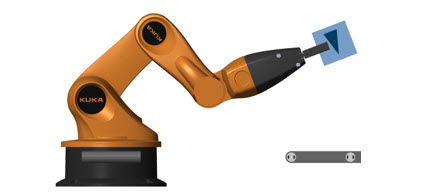

youBot Arm Demo Script

Model
1. Open youBot Model (see also model overview, documentation) Logo: show, hide
Import from Onshape
2. View CAD model in Onshape (requires Onshape account): Open in Chrome
3. Video of import from Onshape
4. Import From: Onshape; Local copy of Simscape Multibody XML file
5. URDF Open Model, View URDF File
Optimization
6. Optimization trajectories (friction on): Video of optimization progress
7. Optimization trajectories (friction on): All; Colored by cost; Original and final only
8. Optimization trajectories (friction off): All; Colored by cost; Original and final only
9. Optimization trajectories (comparison): Original, optimal with and without friction
Videos and Animations
10. Full sequence with arm and belts
11. Full sequence with arm, belts, and Stateflow animation
12. Stateflow animation only
13. Tracking Camera: Behind Box, Right of Box, Fly Through
14. Tests: Max Torque, All Joints 35 deg, Bicep, Forearm, Wrist
Resources
15. youBot: Data Sheet, From Wiki
16. Maxon Data Sheets: EC32 15W; EC45: 30W, 50W, 70W
17. Maxon Data Sheets: EC32 15W; EC45: 30W, 50W, 70W
;){kind=link}
;){kind=link}
;){kind=link}
;){kind=link}
;){kind=link}
;){kind=link}
;){kind=link}
;){kind=link}